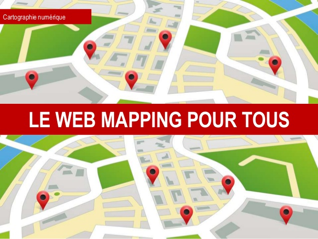

La cartographie en ligne - en anglais : web mapping, ou webmapping - est la forme de la cartographie numérique qui fait usage d'Internet pour pouvoir produire, concevoir, traiter et publier des cartes géographiques. Elle repose sur les services Web dans la logique du cloud computing.
Avec le Web 2.0, de nombreux services Web cartographiques sont apparus (cf palette en fin d'article). Certains sont « propriétaires », tels que Google Maps, Google Earth, Bing Maps, etc. D'autres sont basés sur des démarches coopératives libres, tel que OpenStreetMap.
Les SIG Web sont une manière de faire du "Web mapping". Des logiciels, basés sur trois composantes (client, serveur et données) permettent aux gestionnaires de publier des données en ligne et aux utilisateurs d'accéder à celles-ci en les visualisant. C'est le cas de GeoServer, MapServer ou encore ArcGIS Server.
Des systèmes nationaux dits de « Géoportail » ont été mis en ligne par plusieurs pays. Ils utilisent la cartographie en ligne pour mettre à disposition des usagers, sur Internet, divers renseignements administratifs.